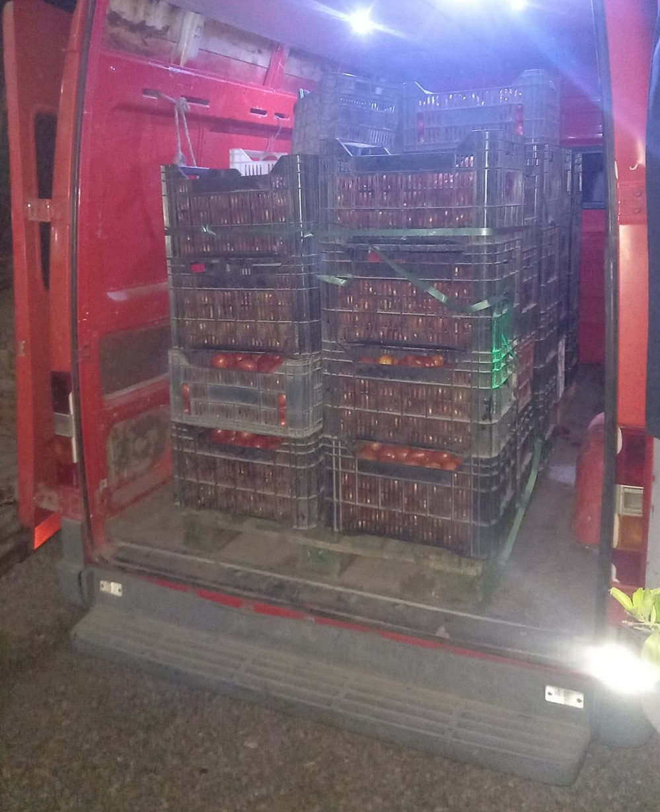
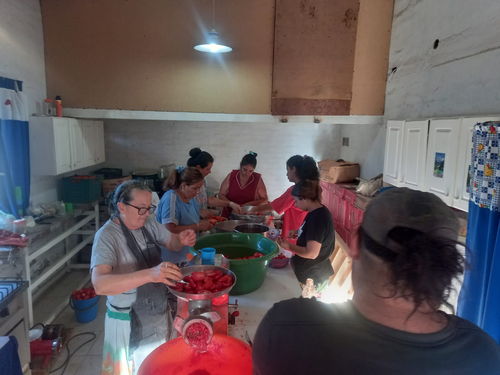
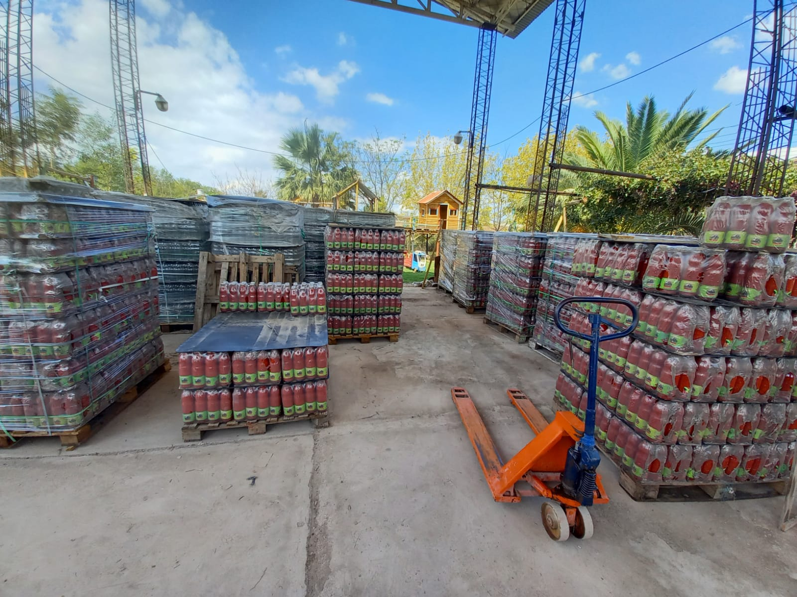
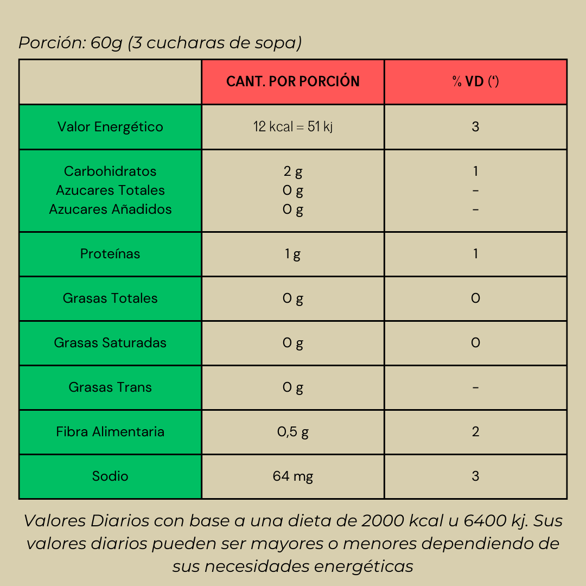
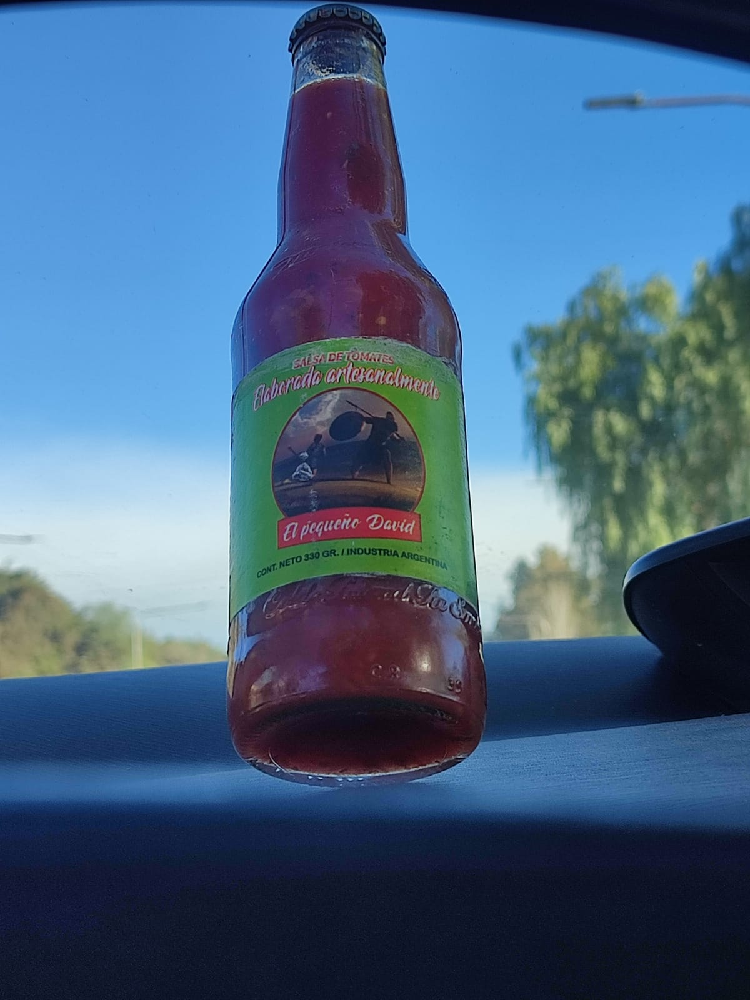
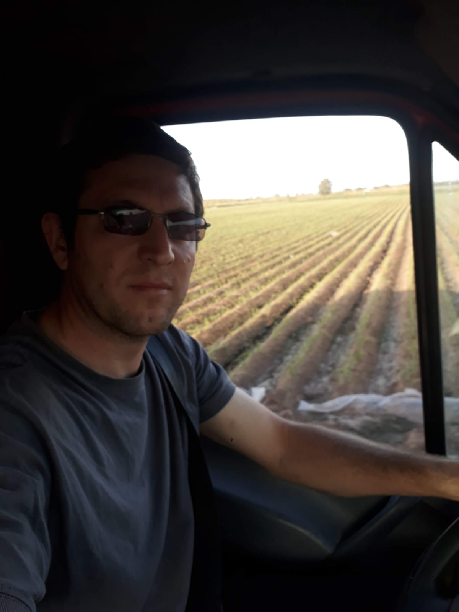
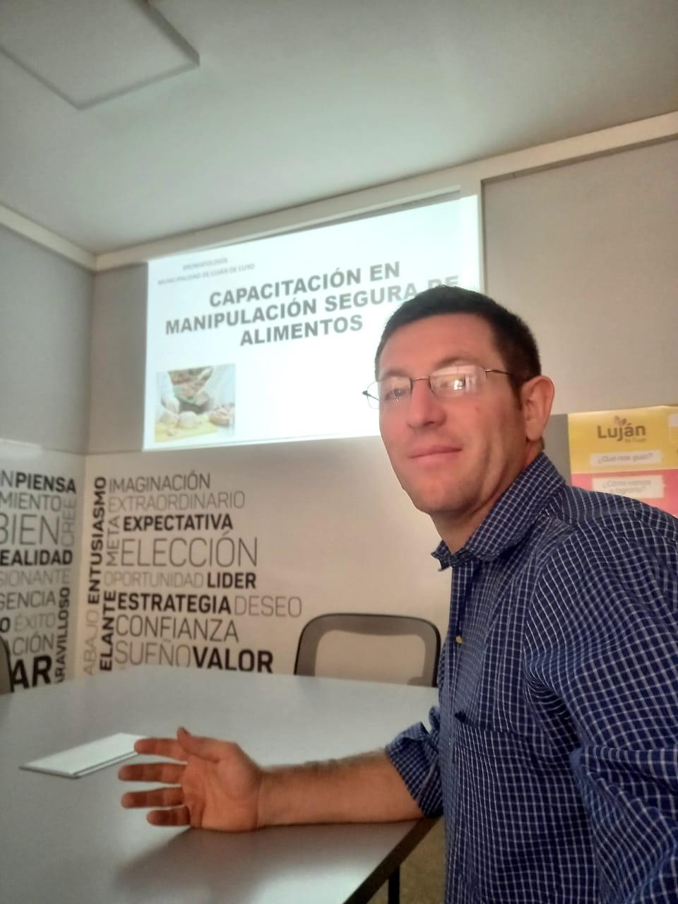

Nos mantenemos en contacto con diversas fincas locales y agricultores que nos proveen de la mejor calidad de tomate. Observamos que los procesos de cultivo y cosecha cumplan nuestros estandares para garantizar la excelencia de nuestro producto, y llevamos las cajas personalmente a nuestra fabrica para comenzar el proceso de producción

Proceso de fabricación:
Cortamos cada uno de los tomates recién lavados y luego los sometemos a un proceso de molienda manual e individual. Esto garantiza que ningún agente externo pueda contaminar el producto. Después de la molienda, los tomates pasan por un proceso de hervido antes de ser envasados y etiquetados.

Traslado Final:
Finalmente, después de todo el proceso de elaboración, llevamos a cabo el traslado meticuloso de nuestro producto a los destinos correspondientes. Queremos destacar especialmente nuestro depósito ubicado en la ciudad de Buenos Aires, donde almacenamos con cuidado cada lote de nuestra salsa casera. Desde allí, distribuimos a nuestros clientes y puntos de venta, asegurándonos de que llegue fresca y lista para deleitar los paladares más exigentes.

INFORMACIÓN NUTRICIONAL

CONTACTO
Contáctanos:
Si tienes alguna pregunta, sugerencia o simplemente deseas saber más sobre nuestra salsa casera orgánica, no dudes en ponerte en contacto con nosotros. Puedes escribirnos a través del siguiente apartado de links y enviarnos un mensaje a nuestras redes!
Julio
Jefe de ventas
DONDE ESTAMOS
Nuestra Fábrica en Las Heras, Mendoza:
Enclavada en el corazón de la pintoresca provincia de Mendoza, nuestra fábrica es un oasis de creatividad y sabor. Ubicada en el municipio de Las Heras, rodeada de majestuosas montañas y viñedos, es aquí donde nace nuestra pasión por la cocina artesanal y los ingredientes frescos.
Cada día, nuestro equipo se sumerge en la esencia de esta tierra: los tomates y las hierbas aromáticas que crecen bajo el sol mendocino. Desde la cosecha hasta la elaboración, seguimos un proceso meticuloso para garantizar que cada lote de nuestra salsa casera orgánica cumpla nuestros altos estándares.
Así que, cuando saborees nuestra salsa, recuerda que detrás de cada cucharada hay un pedacito de Mendoza, una historia de esfuerzo y amor por la cocina tradicional.
¡Te invitamos a visitarnos y descubrir la magia de nuestra tierra en cada bocado!
Realizamos envios a todo el país
NUESTROS VALORES
Creemos que la comida es más que una simple necesidad; es una experiencia que conecta a las personas con la tierra, la cultura y la tradición. Aquí está nuestra filosofía en detalle:
Ingredientes Orgánicos y Locales:
Nos comprometemos a utilizar ingredientes orgánicos cultivados en la fértil tierra de Mendoza. Nuestros tomates y hierbas crecen respetando el equilibrio natural del ecosistema.
Apoyamos a los agricultores locales, fomentando una economía sostenible y reduciendo nuestra huella de carbono al minimizar el transporte de alimentos.
El Arte de la Elaboración Artesanal:
Nuestra salsa no es solo un producto; es una obra de arte culinario. Cada lote se elabora con dedicación y pasión. Cortamos los tomates a mano, mezclamos las especias con cuidado y cocinamos lentamente para resaltar los sabores naturales.
Valoramos la tradición y la artesanía, manteniendo técnicas ancestrales vivas en cada cucharada.
Transparencia y Honestidad:
Creemos en la transparencia total. Desde la selección de ingredientes hasta el proceso de envasado, compartimos cada paso con nuestros clientes. Queremos que sepan exactamente lo que están disfrutando.
Sabor Auténtico y Saludable:
No añadimos conservantes, colorantes ni sabores artificiales. Nuestra salsa es pura y saludable, como si la hubieras hecho en casa.
Cada bocado es una explosión de sabor: tomates maduros y un toque de hierbas frescas.
Comunidad y Compartir la Mesa:
La comida nos une. Invitamos a nuestros clientes a compartir la mesa con sus seres queridos, a disfrutar de la vida y a crear recuerdos alrededor de una buena comida.
GALERÍA

"Un acercamiento a nuestro producto"

"Visitando nuestros proveedores"

"Curso de manipulación de alimentos finalizado"